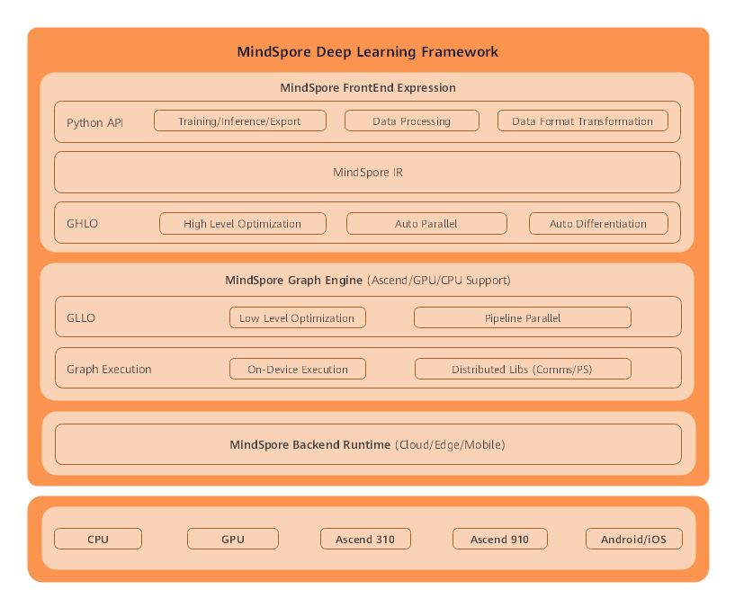

Overall Architecture
This document describes the overall architecture of MindSpore.

The MindSpore framework consists of the Frontend Expression layer, Graph Engine layer, and Backend Runtime layer.

MindSpore Frontend Expression layer
This layer contains Python APIs, MindSpore intermediate representation (IR), and graph high level optimization (GHLO).
Python APIs provide users with a unified API for model training, inference, and export, and a unified API for data processing and format transformation.
GHLO includes optimization irrelevant to hardware (such as dead code elimination), auto parallel, and auto differentiation.
MindSpore IR provides unified intermediate representations, based on which MindSpore performs pass optimization.
MindSpore Graph Engine layer
This layer contains graph low level optimization (GLLO) and graph execution.
GLLO includes hardware-related optimization and in-depth optimization related to the combination of hardware and software, such as operator fusion and buffer fusion.
Graph execution provides communication APIs required for offline graph execution and distributed training.
MindSpore Backend Runtime layer
This layer contains the efficient running environments on the cloud, edge and device.